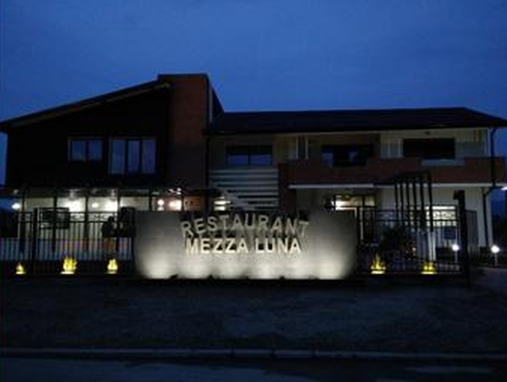
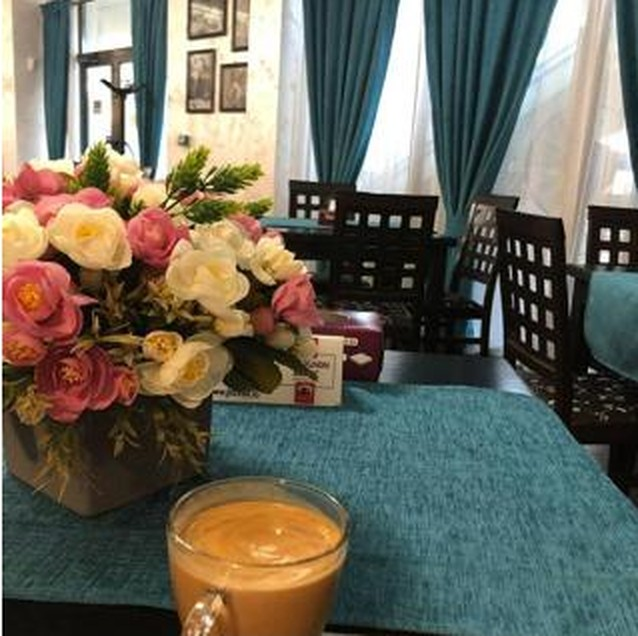
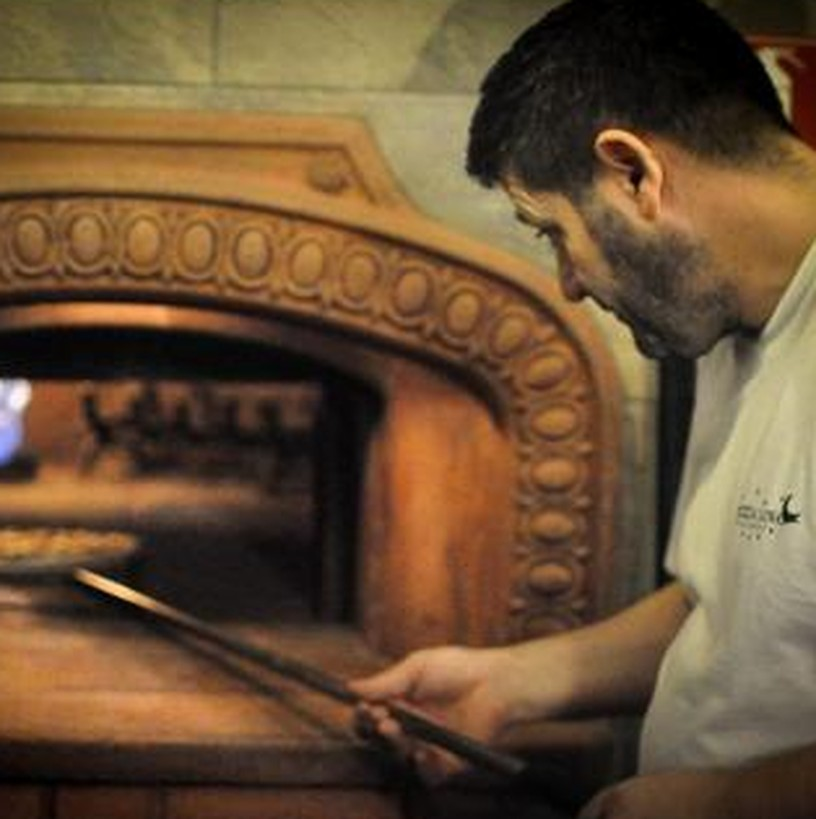
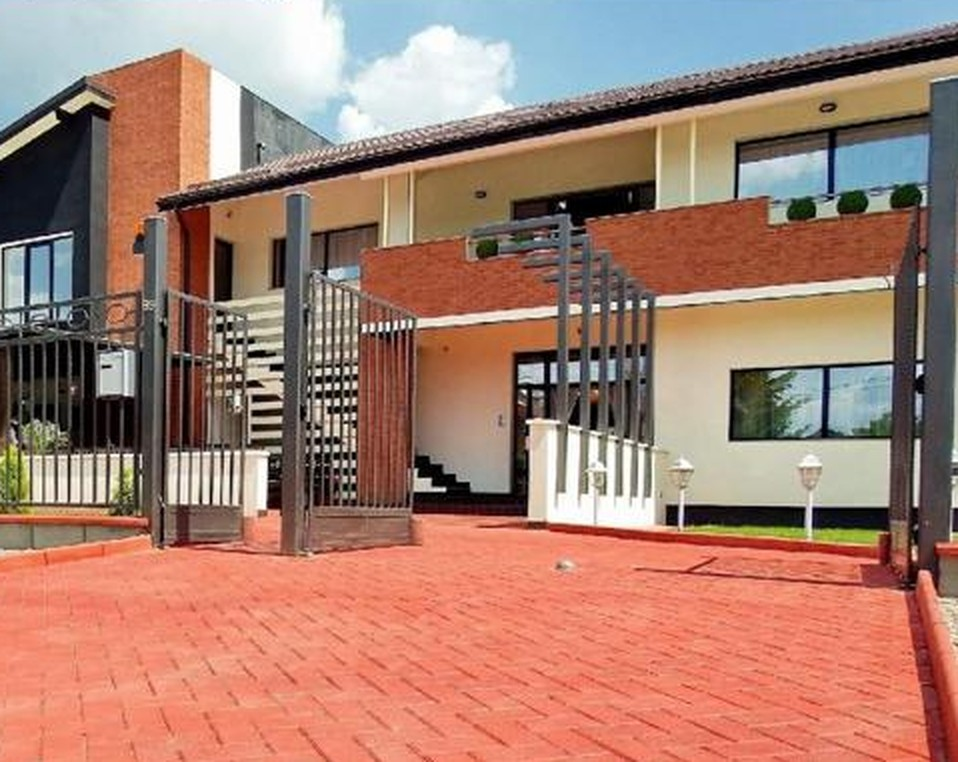

Mic dejun clasic
Ouă ochiuri sau omletă, bacon, brânză, castraveți, roșii cherry, sare, ulei de măsline, pătrunjel, pâine prăjită · 400 g

Paste proaspete, risotto cremos, pizza coaptă pe vatră și fructe de mare — bucătărie italiană și mediteraneană, într-o atmosferă caldă, pe Strada Ostroveni.
La Mezza Luna aducem gustul autentic al Italiei în Râmnicu Vâlcea: paste și fettuccine proaspete, risotto gătit cu răbdare, pizza coaptă pe vatră, în cuptor cu lemne, și un meniu bogat de fructe de mare — de la spaghetti allo scoglio la salate de caracatiță.
Fiecare farfurie pleacă din bucătărie așa cum ne-am dori să o găsim și noi: porții generoase, ingrediente de calitate și un preț corect. Nu întâmplător oaspeții ne-au dat o notă de 4,5 din 5 în peste o mie de recenzii.
Te așteptăm la o masă cu prietenii, o cină în familie sau un eveniment mai mare — într-un local primitor, cu terasă și parcare la îndemână.

Trei motive pentru care vâlcenii revin la noi masă după masă.
Blat copt în cuptorul cu lemne, ingrediente italiene adevărate — de la Margherita la Crudo, Rucola e Scaglie cu prosciutto și parmezan.
Fettuccine, penne, ravioli și risotto gătite proaspăt, cu sos alb, roșu sau fructe de mare. Bucătărie italiană, așa cum trebuie.
Midii, creveți, calamari, langustine și caracatiță — o secțiune întreagă de preparate mediteraneene, rar de găsit la Râmnic.
Câteva dintre preparatele și atmosfera care te așteaptă la Mezza Luna.

Cuptorul cu lemne
Localul nostruPeste 1.000 de recenzii pe Google. Iată câteva dintre ele.
„Mâncare foarte bună, servire plăcută și prețuri decente. Recomand cu drag!”
„Mâncare, servire, atmosferă — totul la superlativ. Porții mari și farfurii pline.”
„Servire ireproșabilă și prețuri accesibile. Un loc pe care îl recomand oricui trece prin zonă.”